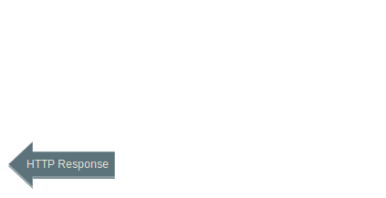
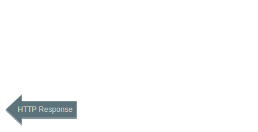

Presented by Njal Karevoll / @nkvoll
with some great slides from @sirthias (Mathias Doenitz)
Master of Science and Technology from NTNU
Co-founder of Found AS
You are to build a business application


Prerequisites
The why and what
Object-Oriented Meets Functional
case class User(username: String, password: String)
case User(name, _) =>copy, equals, hashCode, toString, etc
def output(n: Int)(implicit stream: OutputStream) = stream.write(n)
output('A')(System.out) // prints A to stdout
implicit val out = System.out
output('B') // prints B to stdout
import scala.concurrent.ExecutionContext.Implicits.global
val future = Future.successful("Hello")
val upperCased = future.map(_.toUpperCase) // Future[String]
val length = future.map(_.length) // Future[Int]
upperCased onComplete { println(_) }
trait Printable[T] {
def print(t: T)
}
object Printable {
def print[T](t: T)(implicit printable: Printable[T]) = printable.print(t)
implicit val stringPrintable = new Printable[String] {
def print(t: String) = println("This is a string: " + t)
}
implicit def listPrintable[T](implicit tPrintable: Printable[T]) =
new Printable[List[T]] {
def print(tList: List[T]) = tList.foreach(tPrintable.print)
}
}
scala> Printable.print("foo")
This is a string: foo
scala> Printable.print(List("foo", "bar"))
This is a string: foo
This is a string: bar
Type classes applied to function arguments
def getLength(lm: LengthMagnet) = lm.length
trait LengthMagnet {
def length: Int
}
object LengthMagnet {
implicit def fromUnit(l: Unit) = new LengthMagnet { def length = 0 }
implicit def fromString(s: String) =
new LengthMagnet { def length = s.length }
implicit def formIntList(il: List[Int]) =
new LengthMagnet { def length = il.sum }
implicit def fromStringList(sl: List[String]) =
new LengthMagnet { def length = sl.map(_.length).sum }
}
getLength() // 0
getLength("foo") // 3
getLength(List(1,2,3)) // 6
getLength(List("foo", "bar")) // 6
object MyPimps {
implicit class RichNumeric[T](val t: T) extends AnyVal {
// may depend on additional parameters (Numeric[T] is a typeclass)
def doubled(implicit n: Numeric[T]) = n.plus(t, t)
}
}
// bring the enrichment into scope
import MyPimps._
3.doubled // : Int = 6
2.4.doubled // : Double = 4.8
Powerful generics for Scala
import shapeless._
scala> val someList = List(1, "foo", true)
someList: List[Any] = List(1, foo, true)
scala> someList.head
res0: Any = 1
scala> val someHList = HList(1, "foo", true)
someHList: shapeless.::[Int,shapeless.::[String,shapeless.::[Boolean,shapeless.HNil]]]
= 1 :: foo :: true :: HNil
scala> someHList.head
res1: Int = 1
Want to learn more about Scala?
"A toolkit and runtime for building
highly concurrent, distributed, and fault-tolerant
event-driven applications on the JVM"
class CountingActor extends Actor {
var counter = 0
def receive = {
case "ping" ⇒ println("received ping")
case "count" ⇒ counter += 1
case "get" ⇒ sender ! counter
}
}
Ask pattern returns a future response from an actor
val f: Future[User] = userService ? GetUser(username)Pipe patterns returns the result of a future to another actor
database.queryUserAsync("select ...").pipeTo(sender)Command pattern
trait Command[Rep] {
def request(actor: ActorRef)(implicit timeout: Timeout, ct: ClassTag[Rep]): Future[Rep] =
actor.ask(this)(timeout).mapTo[Rep]
def reply(rep: Rep): Rep = rep
}
case class GetUser(username: String) extends Command[User]
val user: Future[User] = GetUser("foo").request(userService)
case cmd @ GetUser(username) => dbService.queryUserAsync(...).map(cmd.reply).pipeTo(sender)
Want to learn more about Akka?
No better place than Akka Docs
Method Request-URI HTTP-VersionHEAD / HTTP/1.1
HTTP-Version Status-Code Reason-PhraseHTTP/1.1 200 OK
..except it's not that easy:
Formal specification of HTTP (1.1) is in RFC2616 (~350 pages)
Domain model - spray-http
Getting a server up and running
plus:
case class HttpRequest(
method: HttpMethod = HttpMethods.GET,
uri: Uri = Uri./,
headers: List[HttpHeader] = Nil,
entity: HttpEntity = HttpEntity.Empty,
protocol: HttpProtocol = HttpProtocols.`HTTP/1.1`
) extends HttpMessage
case class HttpResponse(
status: StatusCode = StatusCodes.OK,
entity: HttpEntity = HttpEntity.Empty,
headers: List[HttpHeader] = Nil,
protocol: HttpProtocol = HttpProtocols.`HTTP/1.1`
) extends HttpMessage
case class Uri( // proper RFC 3986
scheme: String, // compliant,
authority: Authority, // immutable
path: Path, // URI model
query: Query, // with a fast,
fragment: Option[String]) // custom parser
See RFC 3986
case class `Accept-Charset`(charsetRanges: Seq[HttpCharsetRange])
extends HttpHeader
case class `Accept-Encoding`(encodings: Seq[HttpEncodingRange])
extends HttpHeader
case class `Set-Cookie`(cookie: HttpCookie)
extends HttpHeader
case class RawHeader(name: String, value: String)
extends HttpHeader

Bootstrapping
object Bootstrap extends App {
val system = ActorSystem("example")
val pingPongService = system.actorOf(Props(new PingPongService))
// Tell the IO extension to bind to port 8080 on all interfaces:
IO(Http) ! Http.Bind(pingPongService, "0.0.0.0", 8080)
}
Simple service implementation
class PingPongService extends Actor {
def receive = {
// when a new connection comes in we register
// ourselves as the connection handler
case _: Http.Connected ⇒ sender ! Http.Register(self)
// can you guess what this does?
case HttpRequest(GET, Uri.Path("/"), _, _, _) ⇒
sender ! HttpResponse(entity = "PONG")
}
}
Routing
 

 

class MyServiceActor extends HttpServiceActor {
def receive = runRoute {
path("order" / HexIntNumber) { id =>
get {
complete {
"Received GET request for order " + id
}
} ~
put {
complete {
"Received PUT request for order " + id
}
}
}
}
}
See the tree-like structure?
$ curl ../order/invalid
The requested resource could not be found.
$ curl ../order/cafe
Received GET request for order 51966
$ curl ../order/cafe -XPOST
HTTP method not allowed, supported methods: GET, PUT
def mainRoute = readableLogRequestResponse(lc) {
pathPrefix("app") {
serveDirectory(appPath)
} ~
pathPrefix("api" / "v0") {
timedRoute(apiTimer) {
requireLoggedInOrAnonymous(apiAuth, userResolver, userCookieName, anonymousUser.username, secureCookies) {
currentUser =>
requireReachableQuorum() {
pathPrefix("users") {
path("current") {
get {
complete(currentUser)
}
} ~
requireAnonymous(currentUser) {
path("register") {
post {
anyParams('username, 'password) {
(username, password) =>
complete(registerUser(username, password))
}
}
}
} ~
requireRegistered(currentUser) {
path("user" / Segment) { username =>
get {
(requirePermission("users.user.attributes.view", currentUser) | validate(currentUser.username == username, "can only view details about self")) {
complete(lookupUser(username))
} ~
complete(lookupUser(username).innerMapOption(_.withoutAttributes))
} ~
put {
entity(as[User]) { updatedUser =>
validate(updatedUser.username == username, "changing the username is not supported") {
requirePermission("users.user.attributes.edit", currentUser) {
complete(updateUser(updatedUser))
}
}
}
}
} ~
path("user" / Segment / "password") { username =>
put {
(requirePermission("users.user.password.edit", currentUser) | validate(currentUser.username == username, "can only edit password for self")) {
anyParams('password) { password =>
complete(updateUserPassword(username, password))
}
}
}
} ~
path("_search") {
parameter('query) { query =>
complete(findUsers(query))
}
}
}
} ~
requirePermission("messages", currentUser) {
pathPrefix("messages") {
path("send" / Segment) { destination =>
anyParam('contents) {
contents =>
complete(sendMessage(currentUser.username, destination, contents))
}
} ~
path("message" / Segment) { id =>
complete(getMessage(currentUser.username, id))
} ~
path("latest") {
parameters('since.as[DateTime] ?) {
since =>
complete(getMessages(currentUser.username, since getOrElse DateTime.now(DateTimeZone.UTC).minusDays(1)))
}
} ~
pathPrefix("receive") {
path("poll") {
parameters('keepAlive.as[Int] ? 10, 'since.as[DateTime] ?) {
(keepAlive, since: Option[DateTime]) =>
ctx => pollMessages(ctx, currentUser.username, keepAlive, since orElse Some(DateTime.now(DateTimeZone.UTC)))
}
}
}
}
}
}
} ~
path("logout") {
logout(anonymousUser.username, userCookieName, secureCookies)
}
}
}
}
type Route = RequestContext ⇒ UnitUses explicit continuation-passing style, nestable.
May complete, reject or ignore the requests.
Usually composed by Directives
case class RequestContext(
request: HttpRequest,
retriesLeft: Int, redirectsLeft: Int,
commander: ActorRef)“Directives” are small building blocks of which you can construct arbitrarily complex route structures.
Does one or more of the following
Directives are type-safe
Combines using ``|`` or ``&``, uses shapeless.HList
// cannot OR hlists of different type signatures:
val route = path("order" / IntNumber) | get // doesn't compile
val route = path("order" / IntNumber) | path("order" / DoubleNumber) // doesn't compile
val route = path("order" / IntNumber) | parameter("order".as[Int]) // compiles
What will be printed, and when?:
val route: Route = {
println("MARK 1")
get {
println("MARK 2")
path("abc" / Segment) { x =>
println("MARK 3") //
complete { // code "inside"
println("MARK 4") // of the
"yeah" // extraction
} //
}
}
}
Tip: try not to create too dynamic routes
dynamicIf(settings.devMode)-directive for reloading
The ~ operator recovers from rejections by trying another route. All rejections are stored.
Rejections are handled by a RejectionHandler
type RejectionHandler.PF = PartialFunction[List[Rejection], Route]Default RejectionHandler bases responses on first rejection.
case MalformedQueryParamRejection(name, msg, _) :: _ ⇒
complete(BadRequest, s"The query parameter '$name' was malformed:\n$msg")
case MalformedRequestContentRejection(msg, _) :: _ ⇒
complete(BadRequest, "The request content was malformed:\n" + msg)
case rejections @ (MethodRejection(_) :: _) ⇒
val methods = rejections
.collect { case MethodRejection(method) ⇒ method }
complete(MethodNotAllowed, List(Allow(methods: _*)),
"HTTP method not allowed, supported methods: " + methods.mkString(", "))
case MissingCookieRejection(cookieName) :: _ ⇒
complete(BadRequest, s"Request is missing required cookie '$cookieName'")
alwaysCache, anyParam, anyParams, authenticate, authorize, autoChunk, cache, cachingProhibited, cancelAllRejections, cancelRejection, clientIP, complete, compressResponse, compressResponseIfRequested, cookie, decodeRequest, decompressRequest, delete, deleteCookie, detach, dynamic, dynamicIf, encodeResponse, entity, extract, failWith, formField, formFields, get, getFromBrowseableDirectories, getFromBrowseableDirectory, getFromDirectory, getFromFile, getFromResource, getFromResourceDirectory, handleExceptions, handleRejections, handleWith, head, headerValue, headerValueByName, headerValuePF, hextract, host, hostName, hprovide, jsonpWithParameter, listDirectoryContents, logRequest, logRequestResponse, logResponse, mapHttpResponse, mapHttpResponseEntity, mapHttpResponseHeaders, mapHttpResponsePart, mapInnerRoute, mapRejections, mapRequest, mapRequestContext, mapRouteResponse, mapRouteResponsePF, method, noop, onComplete, onFailure, onSuccess, optionalCookie, optionalHeaderValue, optionalHeaderValueByName, optionalHeaderValuePF, options, overrideMethodWithParameter, parameter, parameterMap, parameterMultiMap, parameters, parameterSeq, pass, patch, path, pathPrefix, pathPrefixTest, pathSuffix, pathSuffixTest, post, produce, provide, put, rawPath, rawPathPrefix, rawPathPrefixTest, redirect, reject, rejectEmptyResponse, requestEncodedWith, requestEntityEmpty, requestEntityPresent, respondWithHeader, respondWithHeaders, respondWithLastModifiedHeader, respondWithMediaType, respondWithSingletonHeader, respondWithSingletonHeaders, respondWithStatus, responseEncodingAccepted, rewriteUnmatchedPath, routeRouteResponse, scheme, schemeName, setCookie, unmatchedPath, validate
Providing a new value
trait MyRouting extends DateDirectives {
def myRoute: Route = get {
weekendsOnly() { dow =>
complete("ok")
}
}
}
trait DateDirectives extends Directives {
def weekendsOnly(): Directive1[Int] = weekendsOnly(DateTime.now(DateTimeZone.UTC))
def weekendsOnly(now: DateTime): Directive1[Int] = {
val dow = now.dayOfWeek().get()
if(dow == DateTimeConstants.SATURDAY || dow == DateTimeConstants.SATURDAY)
provide(dow)
else reject
}
}
Directive0Directive1[T]Directive[L <: HList]
Transforming an existing directive
def browserVersion: Directive1[Seq[ProductVersion]] = {
optionalHeaderValueByType[HttpHeaders.`User-Agent`]() flatMap {
case Some(HttpHeaders.`User-Agent`(pvs))
if pvs.exists(_.product.contains("Mozilla")) =>
provide(pvs)
case _ =>
reject
}
}
val route = browserVersion { version =>
// e.g: List(Mozilla/5.0 (Macintosh; Intel Mac OS X 10_9_2), Chrome/34.0.1847.131)
complete(s"Hello, $version")
}
Using a magnet
trait PermissionDirectives extends Directives {
def requirePermission(pm: PermissionMagnet) = pm.requirePermission
}
trait PermissionMagnet {
def requirePermission: Directive0
}
object PermissionMagnet extends Directives {
implicit def fromPermissionAndUser(pu: (String, User)): PermissionMagnet =
new PermissionMagnet {
override def requirePermission: Directive0 =
if (pu._2.hasPermission(pu._1))
pass
else
reject(AuthorizationFailedRejection)
}
}
val route = requirePermission("user.edit", currentUser) { complete("ok") }
Pipeline for Request building and Response transformation
def pipeline: HttpRequest => Future[JsObject] = {
encode(Gzip) ~>
addHeader(HttpHeaders.Accept(MediaTypes.`application/json`)) ~>
logRequest(log, Logging.InfoLevel) ~>
sendReceive ~>
decode(Gzip) ~>
logResponse(log, Logging.InfoLevel) ~>
// if the server gives us weird content types, use our own:
enforceResponseContentType(ContentTypes.`application/json`) ~>
unmarshal[JsObject]
}
Improvements on the drawing board
Best practices
Advanced topics
Avoid functions operating on routes. Dont:
def ensureUserCookieRoute(inner: Route): Route = {
parameter("ignoreExistingCookies") { _ =>
setCookie(HttpCookie("user", "username")) {
inner
}
} ~
cookie("user") { cookie =>
validate(cookie.content == "username", "invalid cookie") {
inner
}
} ~
setCookie(HttpCookie("user", "username")) {
inner
}
}
Write directives!
def ensureUserCookie(user: String): Directive0 = {
val userCookie = HttpCookie("user", user)
parameter("ignoreCookies"?) flatMap {
case Some(_) => setCookie(userCookie)
case None => optionalCookie("user") flatMap {
case Some(c: HttpCookie) if c.content == user => pass
case None => setCookie(userCookie)
}
}
}
def myRoute: Route = ensureUserCookie("username") { inner }
Dynamic route parts have to be rebuilt per request:
val routeA =
path("abc" / Segment) { x =>
get {
complete(responseFor(x))
}
}
val routeB =
get {
path("abc" / Segment) { x =>
complete(responseFor(x))
}
}
Keep request-specific as short as possible.
If OR-ing routes, put quick routes first, even if the difference may be initially non-obvious
// avoid:
def requireLoggedIn(authMagnet: AuthMagnet[String]) = {
(authenticate(authMagnet) | verifyUserCookie) flatMap { username =>
// ...
}
}
// consider:
def requireLoggedIn(authMagnet: AuthMagnet[String]) = {
(verifyUserCookie | authenticate(authMagnet)) flatMap { username =>
// ...
}
}
AuthMagnet[T], as well as any other Directive may be asynchronous.
Pay special attention to the uri parsing mode:
uri-parsing-mode = strict | relaxed | relaxed-with-raw-queryYou might need raw-request-uri-header
Define functionality trait
trait UserRoutingFunctionality {
def registerUser(username: String, password: String): Future[User]
def lookupUser(username: String): Future[Option[User]]
def updateUser(updatedUser: User): Future[User]
def findUsers(query: String): Future[Usernames]
def updateUserPassword(username: String, password: String): Future[Option[User]] = {
lookupUser(username).innerFlatMapOption(storedUser =>
updateUser(storedUser.withPassword(password))
.map(Option.apply))
}
}
Define routing given functionality
trait UserRouting extends ...
with UserRoutingFunctionality {
def userRoute(currentUser: User)(implicit t: Timeout, ec: ExecutionContext): Route = {
requireRegistered(currentUser) {
path("user" / Segment) { username =>
get {
complete(lookupUser(username).innerMapOption(_.withoutAttributes))
}
} ~
path("user" / Segment / "password") { username =>
put {
(requirePermission("users.user.password.edit", currentUser) | validate(currentUser.username == username, "can only edit password for self")) {
anyParams('password) { password =>
complete(updateUserPassword(username, password))
}
}
}
} ~
path("_search") {
parameter('query) { query =>
complete(findUsers(query))
}
}
}
}
// format: ON
}
Define functionality given a specific set of services
trait ActorUserRoutingFunctionality extends UserRoutingFunctionality {
def userService: ActorRef
override def registerUser(username: String, password: String)(implicit t: Timeout, ec: ExecutionContext): Future[User] = {
val user = User(username).withPassword(password)
AddUser(user).request(userService)
}
override def lookupUser(username: String)(implicit t: Timeout, ec: ExecutionContext): Future[Option[User]] = {
GetUser(username).request(userService).recoverAsFutureOptional
}
override def updateUser(updatedUser: User)(implicit t: Timeout, ec: ExecutionContext): Future[User] = {
UpdateUser(updatedUser).request(userService)
}
override def findUsers(query: String)(implicit t: Timeout, ec: ExecutionContext): Future[Usernames] = {
FindUsers(query).request(userService).map(_.toUsernames)
}
}
Tie it all together in the service actor
class HttpService(_userService: ActorRef)
extends HttpServiceActor
with HttpServiceRouting
with UserRouting
with ActorUserRoutingFunctionality {
override def userService = _userService
val currentUser = User("anonymous")
override def receive: Receive = runRoute(userRoute(currentUser))
}
Create intermediate traits if required for clarity or brevity.
Consider the number of HttpService actors.
val httpService = system.actorOf(SmallestMailboxPool(4)
.props(Props(new HttpService(...))), "http-service")
Can always be overridden by the configuration.
Deserializing a HttpEntity to a T
Serializing a T to a HttpEntity
import spray.httpx.SprayJsonSupport
import spray.json._
case class User(username: String, password: String)
trait UserProtocol extends DefaultJsonProtocol {
implicit val userFormat: RootJsonFormat[User] = jsonFormat2(User)
}
class MyRouting extends Directives with UserProtocol with SprayJsonSupport {
def route: Route = entity(as[User]) { user =>
complete(user)
}
}
Behind the scenes
// say we want the entity as an instance of User from the HttpRequest:
entity(as[User]) // : Directive1[User]
// we can get it if we have an FromRequestUnmarshaller[User]
def entity[T](um: FromRequestUnmarshaller[T]): Directive1[T] = provide(_.request.as(um))
// which is hopefully possible to get from an implicit resolution
def as[T](implicit um: FromRequestUnmarshaller[T]) = um
// if we have an Unmarshaller[User], we can deserialize it from the request entity
implicit def fromMessageUnmarshaller[T](implicit um: Unmarshaller[T]): FromMessageUnmarshaller[T] =
um(msg.entity)
// if we have a json reader for the User type, we have a unmarshaller for that type:
implicit def sprayJsonUnmarshaller[T: RootJsonReader]: Unmarshaller[T] = jsonReader[T].read(json)
// the json reader is provided by a `case class` utility from spray-json:
implicit val userJsonReader: RootJsonReader = jsonFormat2(User)
What if we wanted to use jackson?
trait JacksonUnmarshalling {
implicit object ObjectNodeDeserializer extends FromRequestUnmarshaller[ObjectNode] {
override def apply(request: HttpRequest): Either[DeserializationError, ObjectNode] = {
mapper.readObjectNode(request.entity.data.toByteArray) match {
case None => Left(MalformedContent("Unable to read json data."))
case Some(obj) => Right(obj)
}
}
}
}
class MyRouting extends Directives with JacksonUnmarshalling {
def route: Route = entity(as[ObjectNode]) { user =>
complete("ok")
}
}
trait JacksonMarshalling {
implicit def jsonNodeMarshaller(implicit mapper: ObjectMapper): Marshaller[JsonNode] =
Marshaller.of[JsonNode](ContentTypes.`application/json`) { (value, ct, ctx) =>
if (value.isObject && !value.has("ok")) value.asInstanceOf[ObjectNode].put("ok", true)
ctx.marshalTo(HttpEntity(ct, mapper.writeValueAsBytes(value)))
}
}
class MyRouting extends Directives with JacksonMarshalling {
implicit val mapper = new ObjectMapper()
def route: Route = get {
complete(mapper.createObjectNode().put("hello", "world"))
}
}
Accept: headers
case class MyCustomRejection(reason: String) extends Rejection
object MyRejectionHandler extends Directives {
def handler: RejectionHandler = {
case MyCustomRejection(reason) :: _ =>
complete(BadGateway, s"Rejecting your request: $reason")
}
}
trait RejectionRouting extends Directives {
def route: Route = get {
handleRejections(MyRejectionHandler.handler) {
get {
reject(MyCustomRejection("just because"))
}
}
}
}
May also use implicit parameters to runRoute
Common pitfall:
trait SerializationRoute extends Directives {
def userFuture = Future.successful(User("foo"))
def route: Route = get {
get {
complete(userFuture)
}
}
}
=> Does not compile:
Error:(19, 16) could not find implicit value for parameter marshaller:
spray.httpx.marshalling.ToResponseMarshaller[scala.concurrent.Future[org.nkvoll.javabin.models.User]]
complete(userFuture)
^
Add implicitly[..] for stuff that _should_ work:
trait SerializationRoute extends Directives {
def userFuture = Future.successful(User("foo"))
def route: Route = get {
get {
implicitly[ToResponseMarshaller[org.nkvoll.javabin.models.User]]
implicitly[ToResponseMarshaller[Future[String]]]
complete(userFuture)
}
}
}
=> Does not compile:
Error:(23, 17) could not find implicit value for parameter e:
spray.httpx.marshalling.ToResponseMarshaller[org.nkvoll.javabin.models.User]
implicitly[ToResponseMarshaller[org.nkvoll.javabin.models.User]]
^
Magically realize some of what is missing
trait SerializationRoute extends Directives with SprayJsonSupport {
def userFuture = Future.successful(User("foo"))
def route: Route = get {
get {
implicitly[ToResponseMarshaller[org.nkvoll.javabin.models.User]]
implicitly[ToResponseMarshaller[Future[String]]]
complete(userFuture)
}
}
}
=> Does not compile:
Error:(24, 17) could not find implicit value for parameter e:
spray.httpx.marshalling.ToResponseMarshaller[scala.concurrent.Future[String]]
implicitly[ToResponseMarshaller[Future[String]]]
^
.. then the remaining part(s) should be obvious
trait SerializationRoute extends Directives with SprayJsonSupport {
def userFuture = Future.successful(User("foo"))
def route(implicit ec: ExecutionContext): Route = get {
get {
complete(userFuture)
}
}
}
Running as a service: commons-daemon + jsvc
Deployment configuration
Code reloading and redeploying
Metrics - codahale, StatsD, pillage, spray-metrics(in progress)...
Monitoring - Typesafe Console / atmos, Takipi, NewRelic, Pingdom, ...
Optimize using multiple dispatchers if work-load is sufficiently different
Dont optimize blindly
// if we have an "expensive" operation
def expensiveOp(): Double = new util.Random().nextDouble()
// and a Cache for its result type
val cache: Cache[Double] = LruCache()
// we can wrap the operation with caching support
// (providing a caching key)
def cachedOp[T](key: T): Future[Double] = cache(key) {
expensiveOp()
}
cachedOp("foo").await === cachedOp("foo").await
also: the end